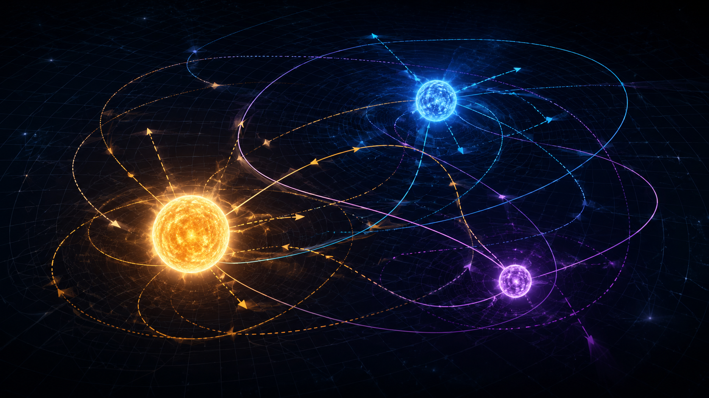

Why three bodies are annoying in the best possible way
In physics, some problems look innocent until you actually try to solve them. The three-body problem is one of those. Put two massive bodies in empty space and Newton gives you beautiful conic sections: circles, ellipses, parabolas, hyperbolas. Add a third body and suddenly the universe stops behaving like it is trying to help with your homework.
The issue is not that Newton’s law fails. The issue is that it works too well. Every body pulls on every other body at the same time. Each object changes the gravitational field that changes the motion of the others, which then changes the field again. It is feedback, but written in gravity instead of electronics.
That is the part I find beautiful. A simple rule can create behaviour that feels almost alive. Not alive in the biological sense, obviously — the bodies are not making decisions. But their motion has enough structure, instability, and surprise that it starts to feel less like a clockwork machine and more like a conversation where everyone interrupts everyone else.
The equation is simple. The behaviour is not.
For three point masses, the acceleration of each body is calculated by summing the gravitational pull from the other two. In vector form, body \(i\) feels an acceleration:
Here \(\mathbf{r}_i\) is the position of body \(i\), \(m_j\) is the mass of body \(j\), \(G\) is the gravitational constant, and \(\epsilon\) is a small softening length used in the browser simulation to avoid numerical explosions during extremely close encounters.
This single expression hides the reason the problem becomes hard. Body A pulls B and C. Body B pulls A and C. Body C pulls A and B. No object gets to move in a fixed gravitational field, because the field itself is changing as all three objects move. The problem is coupled from the beginning.
Sensitive dependence: the universe’s passive-aggressive footnote
Chaos does not mean random. This is important. A chaotic system can be fully deterministic and still become practically unpredictable. If you know the exact initial conditions with infinite precision, the equations determine the future. Unfortunately, real measurements do not come with infinite precision, because reality is not a generous lab demonstrator.
In a chaotic three-body system, two nearly identical starting states can remain close for a while and then diverge dramatically. The small difference is stretched by the dynamics. A body that almost gets ejected may stay bound. A stable-looking configuration may become unstable. A tiny velocity kick can decide whether the system behaves politely or starts throwing stars out like bad guests.
The quantity \(\lambda\) is related to the Lyapunov exponent. If \(\lambda > 0\), nearby trajectories separate exponentially for some interval. Translation: the system remembers your tiny error and makes it everyone’s problem later.
This is why the phrase “we just need better initial conditions” is both true and not enough. Better measurements extend the prediction window, but chaos can still limit long-term predictability. That does not make the science useless. It tells us what kind of claim we are allowed to make.

How a computer follows the motion without pretending to be a prophet
A browser simulation like the one above does not solve the three-body problem in some magical final sense. It repeatedly estimates gravitational accelerations, updates velocities, then updates positions. That is numerical integration: a controlled sequence of approximations.
In the simulation here, I use a velocity-Verlet style update. It is simple enough for a web page, but behaves better than the most naive Euler method because it treats position and velocity updates more symmetrically. For an educational visual, that is a sensible compromise: clear, fast, and not too embarrassing in front of people who know what symplectic means.
After updating position, the acceleration is recalculated using the new positions.
This still remains an approximation, so energy will not be perfectly conserved, especially if the time step is too large or two bodies pass extremely close. That is not gravity failing. That is your browser trying to solve celestial mechanics while also keeping fifteen tabs open.
In research-grade celestial mechanics, integrator choice matters deeply. Symplectic integrators, adaptive time steps, regularisation schemes, and high-order methods all exist because the universe has no obligation to make your numerical life convenient. But even a simplified simulation can teach the core lesson: local rules, global complexity.
This is not just a toy problem. Space actually does this.
The three-body problem appears across astrophysics. Triple-star systems, star clusters, planet–moon–star interactions, compact-object encounters, and galaxy-scale gravitational interactions all contain the same basic idea: several gravitating objects exchange energy and angular momentum over time.
In star clusters, repeated few-body encounters can harden binaries or eject stars. In planetary systems, an additional massive planet can destabilise or reshape orbits. In compact-object dynamics, three-body interactions can help form close binaries that later become gravitational-wave sources. In other words, the three-body problem is not an abstract mathematical inconvenience. It is one of the universe’s favourite ways of rearranging furniture.
What the interactive lab is actually showing
The simulation above is designed to be educational, cinematic, and computationally honest enough for a blog post. It is not a precision orbital dynamics code. It uses softened Newtonian gravity, a finite time step, and a visual scale chosen for readability. The bodies are rendered as glowing spheres because glowing spheres look better than three small dots pretending to be educational.
The important thing is the qualitative behaviour. The trails show sensitivity. The centre-of-mass lock makes the system easier to read. The perturbation slider demonstrates how tiny changes can change the future. The presets are not claims of exact astrophysical systems; they are visual experiments.
That, to me, is what makes computational physics beautiful. It does not replace theory or observation. It gives you a way to watch an idea move.
References & further reading
- Newton, I. (1687). Philosophiæ Naturalis Principia Mathematica.
- Poincaré, H. (1890). Sur le problème des trois corps et les équations de la dynamique.
- Valtonen, M. and Karttunen, H. (2006). The Three-Body Problem. Cambridge University Press.
- Heggie, D. and Hut, P. (2003). The Gravitational Million-Body Problem. Cambridge University Press.
- Hairer, E., Lubich, C. and Wanner, G. (2006). Geometric Numerical Integration. Springer.
Comments & reactions
Comments are powered by GitHub Discussions via giscus. Leave a question, correction, or a mildly chaotic thought.